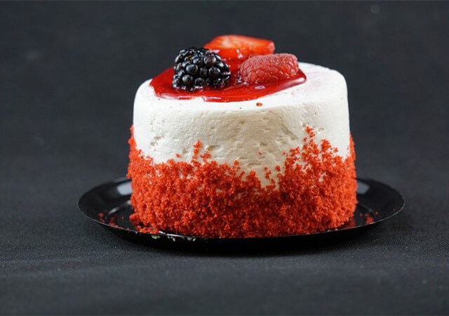

Dessert Menu
デザートの実力を競い合う国際コンテストで何年もトップを走る有名おパティシエが全てのデザートを監修。味はもちろん目で見て楽しめる。インスタ映えという言葉を聞くが、そもそも料理が映えていないと意味がない。たくさん写真を撮ってね。
DESSERT LIST
カカオティラミス
¥580
稚内産のむき海老を贅沢に使用。海老の出汁とスパイスでお米を炊き上げ、うまみを最大限に引き出した一品。２人前から注文可能です。
オレンジマドレーヌ
¥480
十勝のブランド鶏である「中札内地鶏」を丸々一匹焼き上げました。一度高音で焼き上げ、低音で蒸らすことで外はパリッと、身はとろけるような食感に！！
いちごのチーズケーキ
¥450
フランス産の鴨肉を使用。鴨を20種類以上の香草と共に3時間低音で焼き上げました。つけ合わせのオリーブオイルとアンチョビのソースで召し上がれ。

ベーリベリームース
¥980
北海道さんのトラウトサーモンを使用。毎朝水揚げしてくる新鮮な鮭をマーマレードとバジルのソースでソテー。白ワインによくあいます。